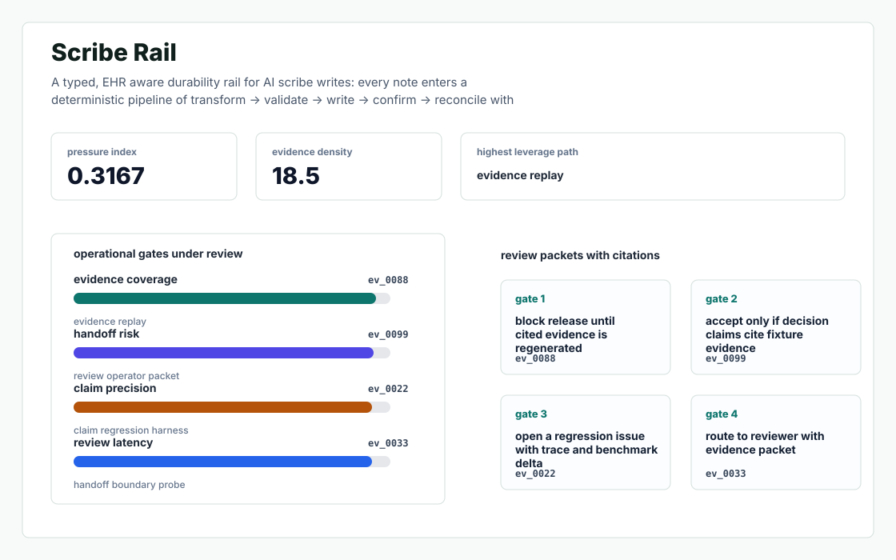
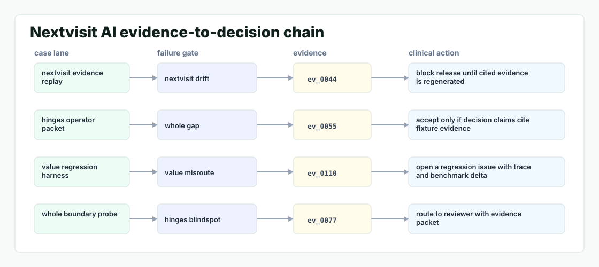

Scribe Rail
A typed, EHR aware durability rail for AI scribe writes: every note enters a deterministic pipeline of transform -> validate -> write -> confirm -> reconcile with semantic fallback, and the clinician sees one sentence - never a lost session.
Cases replayed144
Blocked gates14
Review handoffs19
| Scenario | Action | Severity | Evidence |
|---|---|---|---|
| claim regression harness | open a regression issue with trace and benchmark delta | 2.528 | ev_0022 |
| evidence replay | block release until cited evidence is regenerated | 2.611 | ev_0088 |
| handoff boundary probe | route to reviewer with evidence packet | 2.528 | ev_0033 |
| review operator packet | accept only if decision claims cite fixture evidence | 2.556 | ev_0099 |
Working readout

Evidence path
